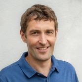
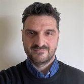
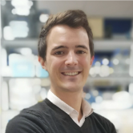

Carpentry-workshops
Right before EuroBioC2025 starts, on Monday and Tuesday 15th and 16th of September, the Bioconductor training committee organizes the following two-day Bioconductor Carpentry Workshops:
Analysis and interpretation of bulk RNA sequencing data with Bioconductor: This course shows how to use Bioconductor packages to analyse bulk RNA-seq data including how to import and annotated quantified data into R, exploratory analysis and quality control, differential expression analyais and gene set enrichment analysis. Pre-requisites: familiarity with R and Bioconductor. Instructors: Estefania Mancini, Vasileios Panagoitis Lenis and Jacques Serizay.
Analysis and interpretation of single-cell RNA sequencing data with Bioconductor: This course shows how to use Bioconductor packages for essential single-cell analysis steps including quality control, cell type annotation, multi-sample analysis, working with large data, and integration with public data. Pre-requisites: familiarity with R and Bioconductor, familiarity with bulk RNA-seq data analysis is beneficial, but not strictly required. Instructors: Robert Ivánek and Kevin Rue-Albrecht.
Each workshop takes two days, so you should either register for one or the other.
Venue and requirements
The Bioconductor Carpentry Workshops will take place at the School of Medicine and Life Sciences of the Universitat Pompeu Fabra (UPF, see https://www.upf.edu/biomed), right next to the PRBB building, where EuroBioC2025 will take place. Participants are expected to bring their own laptop to follow the course. The rooms will have electric sockets to plug AC adapters and wireless internet connection. Eduroam WiFi will be available and participants without Eduroam will be able to connect to a guest UPF WiFi network, but will need a mobile telephone device to authenticate in the guest network.
Registration
Details to register for the pre-conference Carpentries workshops will appear soon. Stay tuned!
What is a Bioconductor Carpentry Workshop
The Carpentries is a global community focused on teaching foundational coding and data science skills to researchers. The core of this community are Carpentries Instructors, who work together to grow their instructional and technical skills. Bioconductor is a member of The Carpentries, supporting community members to earn Carpentries instructor certification, develop Bioconductor-specific training materials, and teach Carpentry workshops on those materials.
A Bioconductor Carpentry Workshop is a course on how to use Bioconductor packages and workflows, led by Carpentry-certified instructors on materials developed by the Bioconductor community.
Instructors
Robert Ivánek
Head of Bioinformatics Core Facility, University of Base, Switzerland
Robert Ivánek is the head of the Bioinformatics Core Facility at the Department of Biomedicine of the University of Basel, which provides solutions for analysis, visualization, management and interpretation of large-scale biological data, mainly produced by high-throughput genomics experiments.

Estefania Mancini
Senior Bioinformatics Scientist, Josep Carreras Leukaemia Research Institute, Badalona, Spain
Estefania Mancini is a senior bioinformatics scientist at the Myelodysplastic Syndromes research group of the Josep Carreras Leukaemia Resarch Institute, with an extensive experience in bioinformatics applied to genomics and next generation sequencing, complemented by a strong background in molecular biology, and currently working on healthcare genomics using AI-driven analysis.
Vasileios Panagiotis Lenis
Associate Professor, University of Birmingham, UK
Vasileios Panagiotis Lenis is Associate Professor in Bioinformatics and Health Data Science Education, working in a range of topics from comparative genomics and evolutionary studies to neuroscience research and personalised medicine.
https://www.birmingham.ac.uk/staff/profiles/cancer-genomic/lenis-vasileios

Kevin Rue-Albrecht
Biomedical Data Science Trainer, University of Oxford, UK
Kevin Rue-Albrecht is a computational biologist and bioinformatics software developer that works on exploring and developing single-cell approaches for understanding inflammatory disorders, and on training cohorts of new computational biologists as part of the Oxford Biomedical Data Science Training Programme.
Jacques Serizay
Postdoctoral Fellow, Institut Pasteur, Paris, France
Jacques Serizay is a computational biologist at the Institut Pasteur, Paris, focusing on leveraging large-scale sequencing data to uncover the complexities of chromatin structure, gene regulation, and epigenetic modifications.
